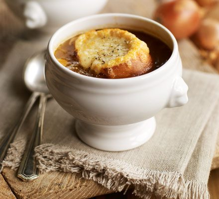

Onion Soup

Onion soup is a soup usually based on meat stock and onions, and often served gratinéed with croutons or a larger piece of bread covered with cheese floating on top
Ingredients
- 50g butter
- 1 tbsp olive oil
- 1 kg onions sliced
- 1 tsp sugar
- 4 garlic cloves, sliced
- 2 tbsp plain flour
- 250ml dry white wine
- 1.3l hot beef stock
- 4-8 slices baguette
- 140g grated gruyere
Steps
- Melt the butter with olive oil in a large pan.
- Add the onions and fry with the lid on for 10 mn until soft.
- Sprinkle the sugar and cokk for 20 mn more, stirring frequently unitl caramelised.
- Add the garlic cloves for the last few minutes of the onions cooking time.
- Sprinkle the plain flour and stir well.
- Increase the heat and keep stirring as you gradually add in the wine, followed by the beef stock.
- Cover and simmer for 15-20 mn.
- To serve, turn on the grill and toast the bread.
- Put a slice or two of toast on top of the bowls of soup.
- Pile on the gruyere, grill until melted.